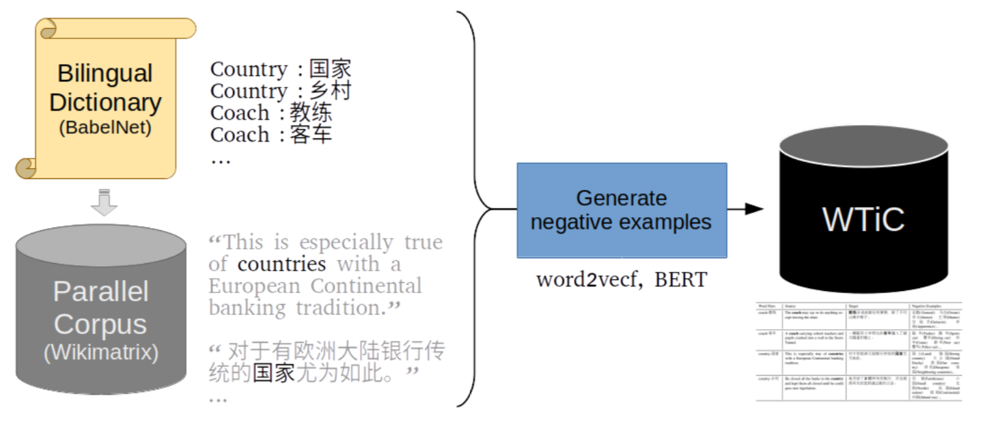
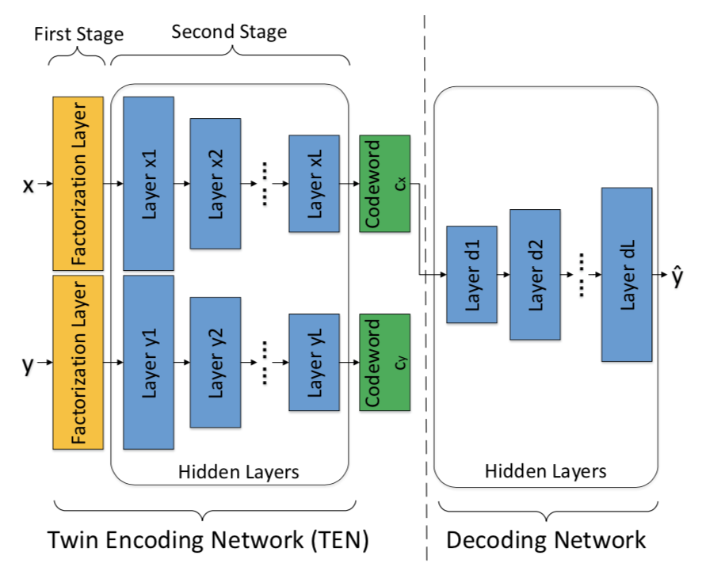
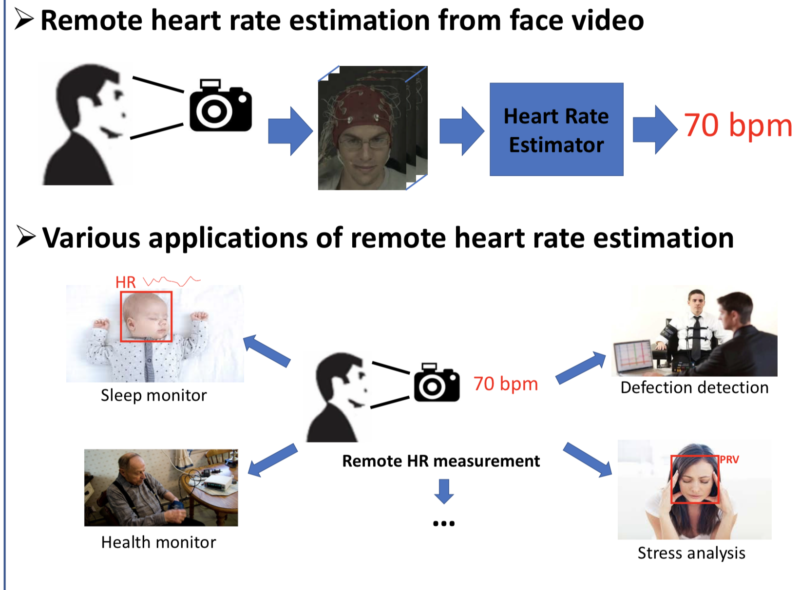

Cross-lingual Contextualized Embeddings Mapping Evaluation (ongoing)
Contextualized word embeddings outperform static word embeddings in a range of downstream tasks. However, in the dictionary-based word translation task, the typically conducted intrinsic evaluation of word embedding, contextualized word embeddings underperform the static word embeddings. Having only dictionary, researchers could not investigate into the dynamic nature of word embeddings with surrounding words. Thus, we made the first step to contextualize a word translation task.
Under revision to submission.

Multi-word Expression in Cross-lingual Word Embeddings
Multi-word expressions, combinations of multiple orthographic words behaving as one word, are common in every language, and one word in one language is often translated into an MWE in another. Existing cross-lingual word embedding studies rely on orthographic words separated by white-space with minimal consideration for multi-word expressions. We proposed a method using lexicon-based tokenization of MWEs to improve Cross-lingual word embedding performance.
Under review.

Two-Stage Label Embedding via Neural Factorization Machines for Multi-label Classification
C. Chen, H. Wang, W. Liu, X. Zhao, T. Hu, G. Chen
Label embedding has been widely used as a method to exploit label dependency with dimension reduction in multi-label classification tasks. However, existing embedding methods intend to extract label correlations directly, and thus they might be easily trapped by complex label hierarchies. To tackle this issue, we propose a novel Two-Stage Label Embedding (TSLE) paradigm that involves Neural Factorization Machine (NFM) to jointly project features and labels into a latent space.
AAAI '19.

Robust Remote Heart Rate Estimation from Face Utilizing Spatial-temporal Attention
X. Niu*, X. Zhao*, H. Han, A. Das, A. Dantcheva, S. Shan, X. Chen
In this work, we propose an end-to-end approach for robust remote heart rate (HR) measurement gleaned from facial videos.
IEEE FG '19.